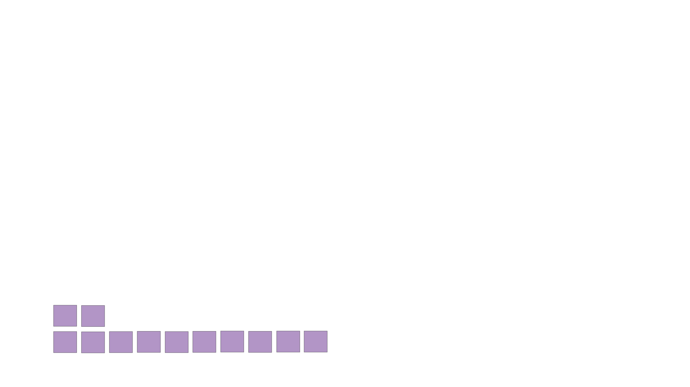
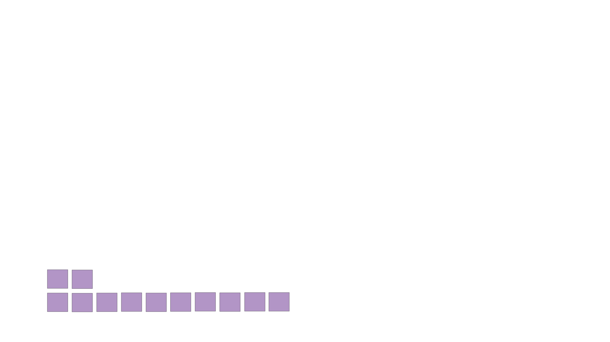
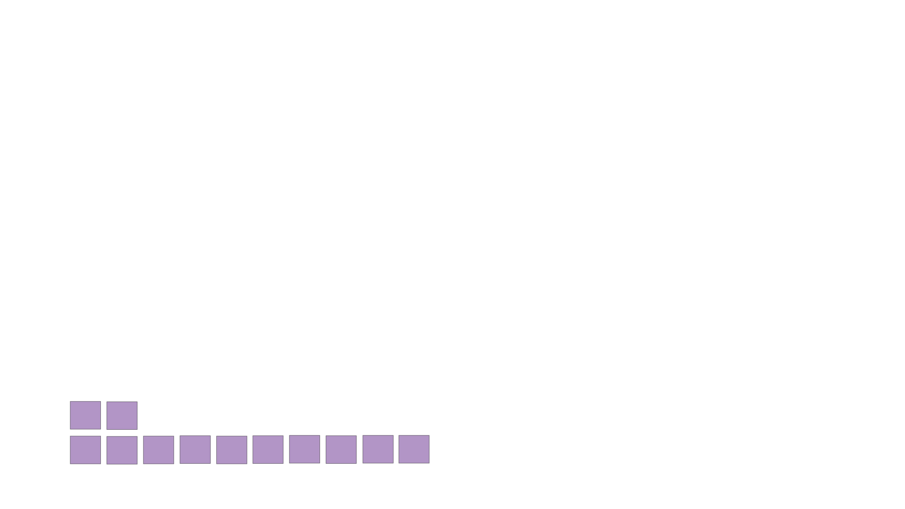

Women artists have for centuries faced discriminated and biases in the world of art. The crypto space was predicted to change that, providing a fresh start for women and minority artists creating NFTs. But in reality, the gender gap has only grown larger in digital art.
By Sarah Grevy Gotfredsen
Canadian singer Grimes, whose real name is Claire Elise Boucher, has always made waves in terms of internet fame. From everything to selling a “piece of her soul” online to her successful music career in a genre she defines as “ethereal nu metal,” Grimes maintains an offbeat and artistically adventurous presence. Last year, she revealed another surprising turn to her career when she released a collection of Non-Fungible Tokens (NFTs) on the digital art auction platform NiftyGateway. Right at the peak of the crypto goldrush, Grimes sold her collection for $5.8 million, making her the highest-selling female NFT artist todate.
Grimes’ collection, entitled Battle of the WarNymphs, depicts modernized and tattooed Michelangelo-esque cherubs flying around distant planets, holding hammers and spears. These babies, as some people have speculated, are rooted in her pregnancy with Tesla CEO and crypto enthusiast Elon Musk. (Last January, the recently separated couple announced the puzziling name for their son: X Æ A-Xii.)
One of the most popular pieces of the collection, Death of the Old, is reminiscent of a music video: the viewer, alongside cherubs, fly through space towards a distant cross standing on what appears to be the rocky surface of planet Mars. It’s accompanied by Grimes’s girlish tone and noticeable lips, singing mostly unintelligible lyrics, resembling an electronic lullaby. The video is one of the most frequently sold pieces in the collection selling for over $300,000. Two other pieces of the collection entitled Earth and Mars were on sale for $7,500 each and sold out in 20 minutes. Grimes sold 691 of the pieces together, totaling up $5.8 million total for the collection.
Grime’s WarNymphs collection sold for $5.8 million, making her the highest-selling female NFT artist
Grimes’ record-breaking sale and NFT’s exploding popularity has left many people outside the crypto space wondering what exactly an NFT is. Simply put, an NFT is data stored on a digital transaction system called a blockchain. If an artists wants to sell an NFT, they have to claim legal ownership over it by “minting’ it or tokenizing it onto the blockchain which makes it easier to track copyright ownership and more difficult to hack.
The awkward part about NFTs is that anyone can in theory download the digital artwork, or simply screenshot it. But this doesn’t mean that they own it. In terms of physical art, screenshotting an NFT is like buying a copy of a Monet, whereas owning access to the data on the blockchain is like owning the original.
Social media was taken by storm when Grimes’s collection sold out. Not just because she was a celebrity, but because she was a woman who had successfully infiltrated a male-dominated crypto space. To this day, Grimes remains the only solo woman artist to crack the top ten of highest selling NFTs. All other high-earning artists have been almost exclusively men. That list includes Beeple, an American digital artist who in 2021 sold the most expensive NFT to date for $69.3 million. Or the programmer Murat Pak, who last year sold an NFT entitled Clock for $52.7 million. The NFT is a dynamic timer that counts the number of days Julian Assange, the founder of WikiLeaks, has spent in prison
Christophe Spaenjers, associate professor of Finance at HEC Paris, said that the lack of female representation in the NFT space might be due to the crypto and tech industry being male dominated. “If you think about the buyers of NFTs, it’s usually crypto-crowd enthusiasts or somebody like finance folks,” Spanjers said. “Typically, it is men that are very interested in this. We see this also on social media, where it’s a more male-dominated conversation, typically with people who have made money in the crypto sector.”
The gender gap in the NFT space is echoing the long-standing lack of female representation in the larger world of art. As the feminist activist group, the Guerilla Girls pointed out in 1985, women have always had a crucial role to play in art, but usually as the nude subjects depicted on a canvas, not as creators. Women artists have definitely seen improvement in terms of representation, but these are minor improvements that are still far from where the standard should be today. For instance, New York City’s major art museums, whose rhetoric in the past decades have promised more equal gender representation, continue to be highly male-dominated with women making up just 10% of the Metropolitan Museum of Art’s contemporary exhibition, 12% of Museum of Modern Art’s, and 25% of the Whitney Collection, according to open source data.
Large parts of society have viewed this gender discrepancy as evidence that women simply aren’ creatively gifted or equipped for the associated fame. In 2017, for instance, post-war painter Georg Baselitz said in an interview with Der Spiegel, that "Women don't paint very well. It's a fact." They "simply don't pass the market test, the value test. As always, the market is right.”
Renee Adams, a Professor of Finance at Oxford University who studies how gender intersects with corporate governance and the art market, decided to test whether art by men and women really do differ. In her paper “Gender is in the eyes of the beholder,” Adams found that paintings by artists who identity as female were sold at a 47% discount. She also examined whether this discount was due to biological factors or to culturally determined gender roles. To test this, she had people identify the gender of the artist simply by looking at a painting. Participants guessed the gender of an artist 50.5% of the time which is statistically indistinguishable from random. This suggests that the gender of an artist doesn’t impact the quality of the artwork.
“When first trying to publish our story, people’s initial reaction to the price discount seen for women was that this must reflect a quality discount,” Adams said over a Zoom interview from her home in Oxford. “So art by women in some sense must be systematically worse than art by men because we all know that markets are efficient. So they had a very hard time accepting that perhaps the gender discount was a reflection of bias and not quality.“
It is exaclty this bias that the crypto space was predicted to get ride off, creating a fresh start for women and minority artists seeking to make it in the art world. An article published in 2021 entitled “Democracy and Community, “Why NFTs will Change the Art World”, postulated that the crypto art world would eliminate the need “of middlemen and arbitrators of taste” such as art dealers, publishers, and anybody who somehow influences which art is “good” and which is “bad.”

NFTs
Paintings
Yet surprisingly, the gender gap in the crypto space turned out to be even larger than in the traditional art world.
Just 5% of NFTs sold on Niftgateway are by artists who identify as female, according to a report by the research firm ArtTactic.
16 percent are by artists who’s gender is unknown and 2 percent are collectives. The remaining 77 percent are by artists identifying as male.
In comparison, about 12 percent of Christie’s auctions of paintings are by artists who identity as female.
The remaining 88 percent are by predominantly white men.
Maria Gertsberg, assistant professor in Finance at Melbourne University researching Gender and Evaluation Biases, said in an interview that NFT artists ostensibly had less barriers to break: “For NFTs you don't need a studio. That makes art production cheaper,” she said. “Women tend to have less flexibility because they have childcare and responsibilities. But NFTs you can do from home,” she added.
One of the most significant predictors of success for an artist is being scouted by an art dealer. This is crucial to provide a network and to introduce the artist to collectors. However, when those dealers visit art schools to scout for promising artists, they tend to simply look for what buyers traditionally tend to like and what therefore sells for significant money.
“Historically, most superstar artists have been male artists, so if you take this as a characteristic that needs to be fulfilled, then that’s what art dealers will look for,” Gertsberg said. “If you don't have a middleman anymore, but you instead represent yourself, this should remove a barrier for women.”
Fanny Lakoubay, a digital art advisor and curator at LAL ART Advisory, started working with digital art 14 years ago. Overseeing NFT’s transition from being merely an experimental art form to becoming a billion-dollar industry, Lakoubay noticed it was male dominated from the beginning. “The first NFT collectors were crypto investors. Like if you go back to Nick Tomaino, he was just trying to diversity his investments,” she said. “NFTs was a new form of assets that was linked to their other investments. And if you look at the population of developers back then, it was a younger audience that was dominantly white male.”
NFTs are deeply ingrained in computational code and web development, making it almost impossible to create without at least a basic understanding of the programming languages such as HTML and CSS. It is the need for this kind of technical knowledge, according to Lakoubay, that men have had an easier time to overcome. Not because men are more technically intelligent, but because more men tend to work and study in technical fields taking on jobs such as software engineering and web developers.
This wasn’t always the case. In the early days of computers, women made up the majority of the field. Many worked as “human computers” and solved complicated calculations at prominent teams such as at the Harvard Computers. The field recruited even more women during the second world war when there was a lack of labor resources. ENIAC, the first programmable general-purpose electronic digital computer built during the war for the United States Army to calculate artillery firing table, was run by mostly women.
Even the trend-spotting Cosmopolitan Magazine published an article in 1968 titled “The Computer Girls” advocating for more women to enter the field. “It’s just like planning dinner,” said one of the female programmers quoted in the article. “You have to plan ahead and schedule everything so that it’s ready when you need it.”
The article argues that programming provides better job opportunities than many other female centered careers at the time, such as teaching and secretary jobs. “If it doesn’t sound like a woman's work –, well, it just is,” the reporter, Lois Mandel, claimed.
The computer science field first began to be more male dominated in the late 1980s. Hiring agencies began making positions more prestigious by requiring applicants to hold higher education degrees. They assigned aptitude tests during the hiring rounds which focused on mathematics and problem solving, skills that men were likely to have developed from taking math classes. To get the right “type” of employees, applicants also had to undergo personality tests which favored people who were loners and liked working alone. The field dropped from 37 percent women in 1934 to 18 percent in 2019.
Jess Conatser, an NFT Curator and Founder of the studio “As We Are”, has launched public programming courses to inspire more people, especially women, to enter the world of digital arts. She also helped create meditative digital art for one of the most popular mediation apps on Appstore, Meditopia, and curated video print for the Kalmyk-American poet Sasha Stiles.
“I don't necessarily think that coding is for men. I think there's a lot of women out there, but historically, we just mentioned male names,” Conatser said during a call from her house in upstate New York. “There are tons of women in programming and in creative code art. We just need to be better at exposing them and putting their names first.”
Conatser has been working on doing just that. Last month, she curated an exhibition at NOWHERE Studio” in downtown Manhattan entitled Women of the World. The exhibition showcased a collection of over 130 NFT artists from around the world, with works representing all seven continents. The point of the exhibition, according to Conatser, was to remind the public that women are also part of the digital evolution.
“It's still a smaller percentage than men,” Conatser said. “But here's a lot of opportunity that isn't necessarily more available to different demographics, and groups, for whatever reason. I think that if we created more space and opportunity for women to access certain skills, or certain occupations, then they would, period.


 
